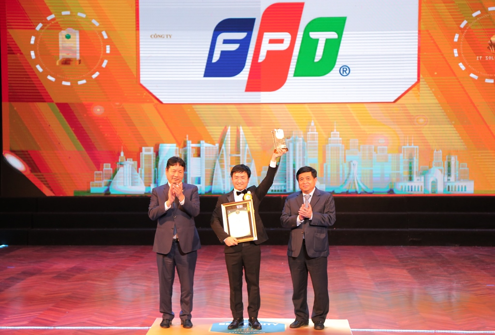

Tin tức học tập
Olympic Toán học
Khác với những ví dụ và bài tập thông thường dành cho trình độ học sinh,không có một giải thuật chung nào để giải quyết các bài toán tầm cỡ Olympic.Mỗi bài toán như vậy là duy nhất và cần áp dụng những ý tưởng mới để giải, nhưng không cần phải là những kiến thức đặc biệt, nghĩa là những kiến thức trong chương trình học phổ thông thông thường đủ để giải quyết nó.
Olympic Toán học Olympic Toán học Olympic Toán học Olympic Toán học Olympic Toán học Olympic Toán học
Khác với những ví dụ và bài tập thông thường dành cho trình độ học sinh, không có một giải thuật chung nào để giải quyết các bài toán tầm cỡ Olympic. Mỗi bài toán như vậy là duy nhất và cần áp dụng những ý tưởng mới để giải, nhưng không cần phải là những kiến thức đặc biệt, nghĩa là những kiến thức trong chương trình học phổ thông thông thường đủ để giải quyết nó.
Olympic Toán học
Khác với những ví dụ và bài tập thông thường dành cho trình độ học sinh, không có một giải thuật chung nào để giải quyết các bài toán tầm cỡ Olympic. Mỗi bài toán như vậy là duy nhất và cần áp dụng những ý tưởng mới để giải,